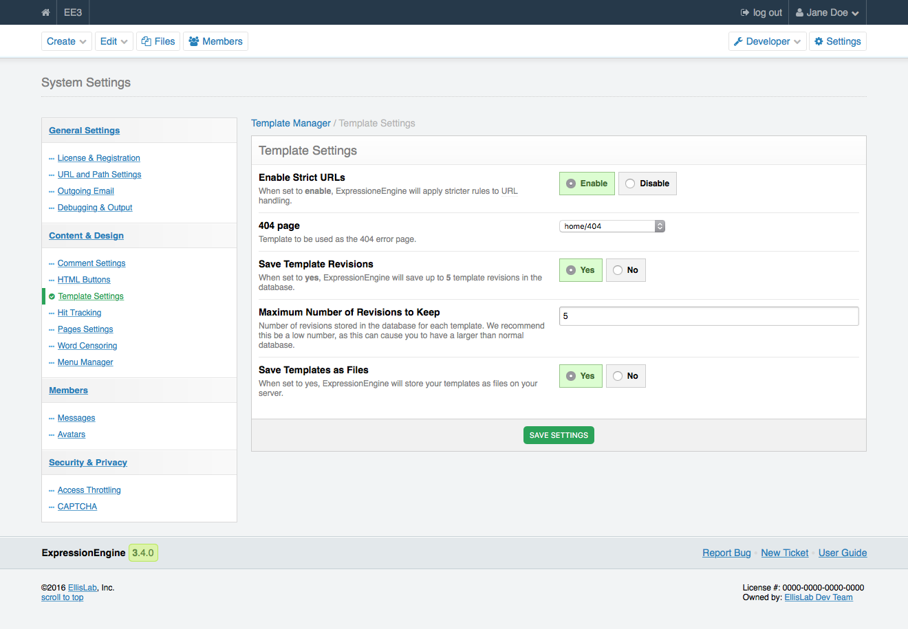

404 Pages¶
Note
The setting is a site-wide preference
By default, ExpressionEngine will direct your visitor to the homepage when a 404 error is encountered.
Displaying a Custom 404 Page¶
If you would like to change the default way that ExpressionEngine handles 404 error codes, you can do that in the Control Panel.

The 404 page setting tells ExpressionEngine which template to use for all the 404 errors that are received. It is worth noting that using Strict URLs is preferable as this makes the path to your content more precise, allows more relevant 404 pages, and does not allow your content to be shown with variances in the URL structure
When is a 404 Page Shown?¶
It’s important to understand that there are two conditions in ExpressionEngine that can cause the 404 page to be shown. An invalid template group and extra segments.
The first condition is an invalid template group. ExpressionEngine only checks the first segment to determine whether or not to show a 404 page. Since first segment is the template group, ExpressionEngine will only display the 404 Template if the requested Template Group in the URL does not exist.
It is recommended that you set you set up a custom 404 page for your site. Even though what a visitor may have entered in the URL is invalid, without a custom 404 page, they’ll still see your homepage which may lead to some confusion.
The second condition that will trigger a 404 status is extra segments. This will require some code to be added to your template. Remember that ExpressionEngine is only looking at the first segment to trigger a 404 status, in order to extend this error checking beyond the first segment we need to use a conditional and the {redirect=} global variable.
{if segment_3 != ''}
{redirect="404"}
{/if}
With the above code, if the third segment is not empty, ExpressionEngine will show the 404 template that we have defined.
Example¶
Often URLs entered by hand are not typed correctly, especially if the URL includes the title of an entry. Avoiding mistyped URLs is much easier when entering just a site name and a template group. For example:
example.com/blog
But let’s say that a visitor wants a specific entry in your blog template group and so they type
example.com/blog/cats-in-dresses-dancing-to-Christmas-music
Chances are they will not get that right and trigger a 404. The template group is correct so they will not see any errors. This makes it seem like they typed everything out just right, but they are left wondering where the cats are.
Let’s take care of that. This is a single entry page, so we can use require_entry= in our channel entries tag pair. This tells the channel entries tag pair to only return results if there is a specific URL title found in the segment of the URL.
Now we need a way to deal with the times there are no results returned. To do this we use a global variable and test for results.
{if no_results}
{redirect="404"}
{/if}
So a completed block code would look like this.
{exp:channel:entries channel="blog" limit="1" require_entry="yes" url_title="{segment_3}"}
{if no_results}
{redirect="404"}
{/if}
Stuff here.
{/exp:channel:entries}